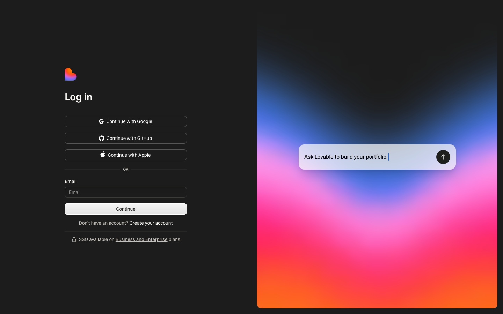
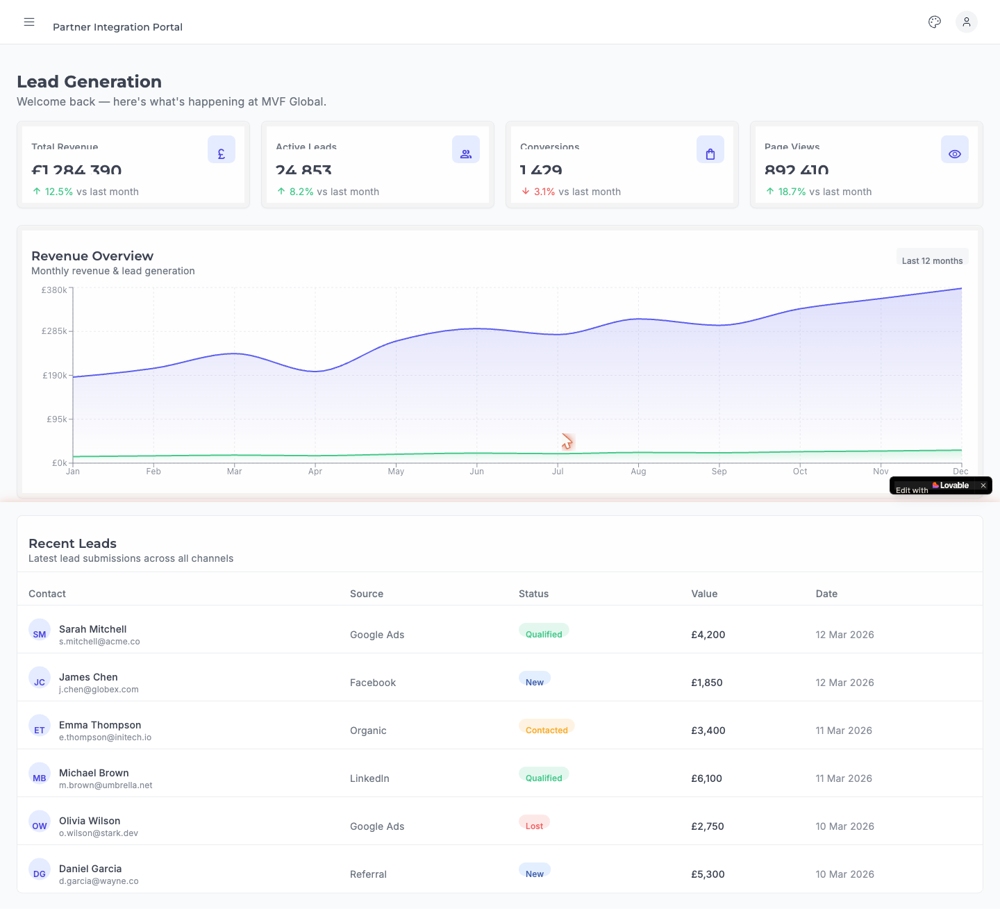
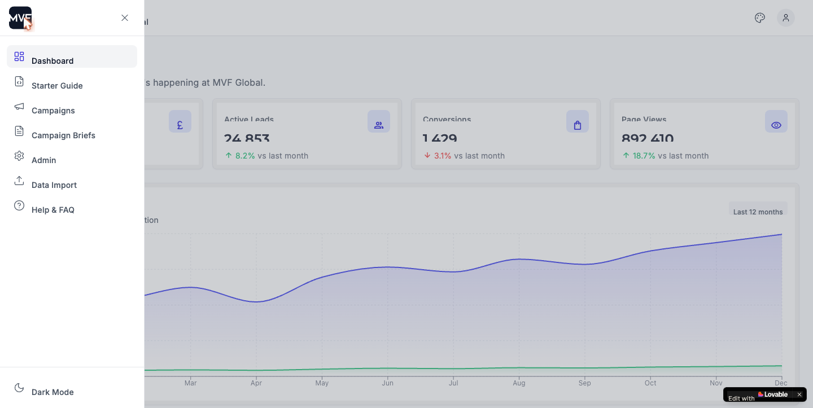
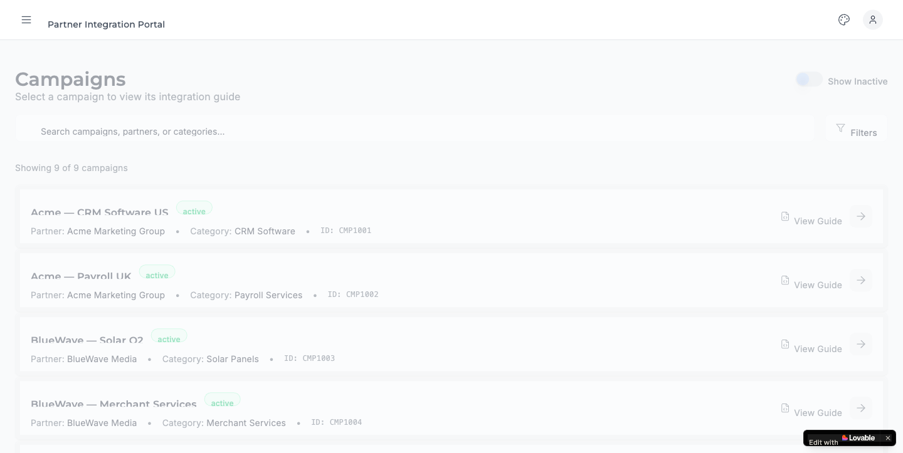

Can a DESIGN.md and a "super prompt" re-skin a Lovable app to match a different template?
We took an existing Lovable build of the MVF Partner Portal, remixed it, and asked Lovable to re-theme it to the MVF Dashboard Template (Flowbite) using a written design contract and a single prompt. The intent was to test whether a design system can be transferred between two Lovable projects by AI alone — no manual component refactor. The short answer is partially: tokens and typography transferred cleanly, but the layout shell and component library did not.
What changed since the last review
Inputs: DESIGN.md (design contract) + reference to @Dashboard Template Lovable project + a single super-prompt asking for a phased visual audit.
Output: An 8-phase plan written by Lovable to .lovable/plan.md, then 19 commits over a single day executing it. Final state: dashboard widgets re-built, tokens replaced, sidebar pattern divergent.
Why it matters: If this works near-end-to-end, future re-themes don't need a designer + frontend engineer. If it stops at "tokens but not shell," we need a different process — better contracts, visual diff loops, or both.
At a glance
Outcome, scope, and where the headline number lands.
Dashboard widgets
Rebuilt
Cards / chart / table all reproduced
Layout shell
Drawer
vs. target's permanent navy rail
Token system
3-tier
Foundation + semantic + brand-state
Components swapped to Flowbite
1 / ~50
Only Input; rest deferred by the model
The honest read: the experiment partially succeeded. The model did exactly what a careful engineer would do — it landed the low-risk, high-leverage changes (tokens, type, palette sweep) and stopped at the boundary where a prompt-driven change would have broken ~50 files. That's defensible, but it's also why the visual result still doesn't look like the template at a glance. The lesson sits between "the AI failed" and "the prompt asked too much."
What we set out to test
The hypothesis behind the experiment.
The team has been exploring whether design transfer — moving an established visual system from one product
into another — can be automated. The hope: write the design rules once as a DESIGN.md contract, point it at a target
project, and let Lovable do the rest. If true, that's a meaningful unlock for every Lovable project that needs to land on the
MVF brand.
The specific hypothesis tested in this experiment was:
DESIGN.md) and a reference to the target template project, a single
super-prompt should produce a phased plan, and on approval should execute it to within visual parity of the target."
— Hypothesis, as set up in the chat session of 2026-05-15
The "super prompt" itself was not a special artefact in the repo. It was the user's message #9 in the chat: an attached
DESIGN.md + a reference to the @Dashboard Template Lovable project, plus an instruction to "produce a
visual audit and phased plan, do not change code yet." Lovable wrote that audit into .lovable/plan.md — that file is
the only durable artefact of the super-prompt response.
How the run actually went
Twenty-five messages, eight phases, one day.
Audit was good
Lovable read src/index.css + tailwind.config.ts + AdminShell.tsx and correctly identified the
token, typography, icon, theme-variant, and palette deltas vs. the template. The 8-phase plan is in
.lovable/plan.md and is essentially what a frontend engineer would have written.
Phases 1, 2, 5, 6, 8 executed cleanly
Token foundation (3-tier system: foundation ramps → semantic surfaces → indigo brand-state), typography (Montserrat +
Inter, letter-spacing: 0.01rem, dropped global tracking-tight), layout shell tokens, dark-mode
selector swap, and the palette sweep across ~14 component files. These are mechanical changes — tokens are very
AI-friendly. They all landed.
Phase 3 (Material Symbols) installed but never used in app code
The wrapper component src/components/ui/Icon.tsx was created and the material-symbols package added,
but the mass lucide → <Icon> migration in ~40 application files was deferred ("mechanical, awaiting
confirmation" — chat #20). So the icon look-and-feel of the app is still lucide stroke-style, not the filled
Material Symbols that the template uses.
Phase 4 (flowbite-react) was deliberately scoped down
The model explicitly chose not to do the full Button / Card / Table / Modal swap, citing "~50 files, breaks shadcn APIs
(asChild, slot props, variants)". It substituted a single restyled Input component instead. This is the
single biggest reason the result doesn't look like the Flowbite template: most chrome is still shadcn primitives
in template clothing.
Phase 7 (theme variants) landed
src/data/themes.ts ships 4 HSL ramps (Indigo, Cyan, Orange, Pink) plus an applyTheme() +
loadStoredTheme() pair wired into main.tsx. A palette-icon dropdown in the topbar lets you flip
between them.
"Last chance to get it right" — message #21
When the gap was still obvious after Phase 8, the user pointed Lovable at three project references and asked for the
dashboard to be made "like for like." The model responded with a full dashboard widget rebuild
(SummaryCard, StatCards, RevenueChart, RecentLeadsTable) — and that did close
the widget-level gap. But it didn't touch the layout shell, which is what stakeholders see in the first 200ms.
The visual outcome, side-by-side
Same data, same widgets, different shell.
Both apps render the same dashboard content — a "Lead Generation" view with four stat cards, a 12-month revenue chart, and a recent-leads table. The mock data is identical. What changed is the layout shell around them.


Look at the chrome, not the cards. The target has a permanent dark-navy sidebar with a dark logo box, a branded topbar with global search, a notifications bell, and a theme/avatar cluster. The remix has none of those — just a hamburger menu icon and the words "Partner Integration Portal" in plain weight. The first-impression read of the two apps is completely different, even though the dashboard widgets underneath are structurally identical.


The sidebar does exist in the remix — Material Symbols icons, indigo selected state, MVF logo box at the top, a
dark-mode toggle at the bottom. It just slides in from the left as a drawer with a backdrop, instead of being permanently
pinned. That's a layout-pattern decision the model made implicitly, because DESIGN.md didn't pin it down.
Why it fell short — five root causes
All five are addressable. None are about the model being incapable.
The design contract specified tokens, not layout pattern
DESIGN.md defined the brand-state ramp, semantic surfaces, and Material Symbols rules in detail. It did not say
"the sidebar is permanent, never collapses, has a 40px dark logo box flush-left, and the topbar starts at the same x-coordinate as the sidebar's right edge." Those are layout assertions, and they were inferred — incorrectly — from a single screenshot reference.
Fix: add a "Layout patterns" section to DESIGN.md that names the shell archetype, not just the colours.
Component-library swap is structurally harder than colour-token swap
Swapping --brand-700 across the codebase is a global find-and-replace. Swapping <Button asChild>
(shadcn) for <Button as="a"> (flowbite-react) is an API-shape refactor that breaks variant props, slot
composition, and the styling system that callers rely on. The model correctly refused to do it via prompt — that's the
right call. But it means the experiment's "swap to Flowbite" goal was always going to fail.
Fix: if Flowbite parity is the goal, the target project should be Flowbite-from-day-one. Re-theming an established shadcn app to Flowbite is not a prompt-shaped problem.
No visual-diff feedback loop
The model executed the plan with no way to look at its own output and self-correct. There was no Playwright/Percy screenshot diff, no "compare what you produced to what the target looks like and iterate" step. It worked from a text spec and a memory of one screenshot — and that's a hard mode.
Fix: add a verification step that screenshots the running app at known viewports and asks the model to compare each one against the template before declaring done.
"Phases deferred" was a one-way door, not a checkpoint
When the model flagged Phase 3 (icon mass-migration) and Phase 4 (flowbite swap) as "your call, awaiting confirmation," the user said "complete all outstanding" (message #19). The model interpreted that as polish + scoping-down, not actually run the deferred phases. So the deferred phases never ran, and the gap they were going to close never closed.
Fix: when a model flags scope-defer, the user-facing wording should make the trade-off explicit: "deferring this means the icons will still look like lucide. Want me to run it anyway?"
"Visual parity" was never quantified
The success criterion was implicit ("like for like"). Without a quantitative target — "at least 9 of 10 reviewers must identify them as the same product within 3 seconds" or similar — the model didn't know when to stop and the reviewer didn't know when to accept.
Fix: name a specific evaluator. Even a 5-shot subjective panel beats no target at all.
What did land — the wins worth keeping
Most of the token system can be lifted into the next project as-is.
-
Three-tier token system — foundation (
--brand-50…900,--gray-50…900) → semantic (--surface-*,--content-*,--border-*,--success/-warning/-danger/-info-*) → indigo brand-state (--brand-default/-hover/-active). Lives insrc/index.cssand is the cleanest part of the codebase. -
Typography — Montserrat headings + Inter body,
letter-spacing: 0.01rem, dropped globaltracking-tight,label[for]margin spacing. All four are template-correct. -
Theme variants —
src/data/themes.tsships 4 brand HSL ramps (Indigo, Cyan, Orange, Pink) plus anapplyTheme()/loadStoredTheme()pair. Wired to a palette-icon dropdown in the topbar. -
Material Symbols wrapper —
src/components/ui/Icon.tsxrenders a<span class="material-symbols-outlined">withfontVariationSettingsfor FILL / wght / GRAD / opsz. Drop-in ready; just unused in app code. -
Palette sweep — ~14 files moved from
bg-blue-100/text-emerald-500/dark:bg-amber-900/30to semantic tokens (bg-info-100,bg-icon-container,bg-[hsl(var(--success-500))]/15). The "stock palette utility on a brand-bound surface" anti-pattern is fully gone. -
Dashboard widget rebuild — the four-up
StatCards, theRevenueChartwith brand gradients, and theRecentLeadsTablewith status badges are visually accurate to the template. The data layer is mocked, but the structure carries.
Recommendations for the next attempt
Five concrete changes to the process, ranked by impact.
Ship layout patterns in the design contract, not just tokens
Add a §L "Layout shell" block to DESIGN.md: shell archetype (permanent rail vs. drawer), nav width, topbar height,
logo-box position, container padding. These are the bits a screenshot-only contract loses.
Don't ask AI to swap component libraries on an established codebase
For shadcn → flowbite, the right move is to restyle shadcn primitives to look like Flowbite using the tokens.
That's what the model attempted with the Input change in Phase 4, and it works. Lock that as the strategy and
extend it to Button, Card, Table, Modal — keep the API, change the visuals.
Add a visual-diff verification step before declaring "done"
Screenshot the running app at /, /campaigns, /admin at 1440×900, attach to the
conversation, ask the model: "compare these to the template and list every visible delta." Iterate until the list is
empty or every remaining item has a deliberate reason.
Make "deferred phases" a checkpoint, not an exit
When the model proposes to defer phases, restate them with their visual consequence: "deferring lucide migration means the icon stroke-weight stays thin and outlines instead of filled — visible deviation from template. Run anyway?" Force the trade-off into the open.
Pin a quantitative success bar
Before the next attempt, name a measurable target: e.g. "five reviewers, given the two URLs blind, identify both as the same product family within 3 seconds." Without that, "good enough" is whoever is loudest in Slack.